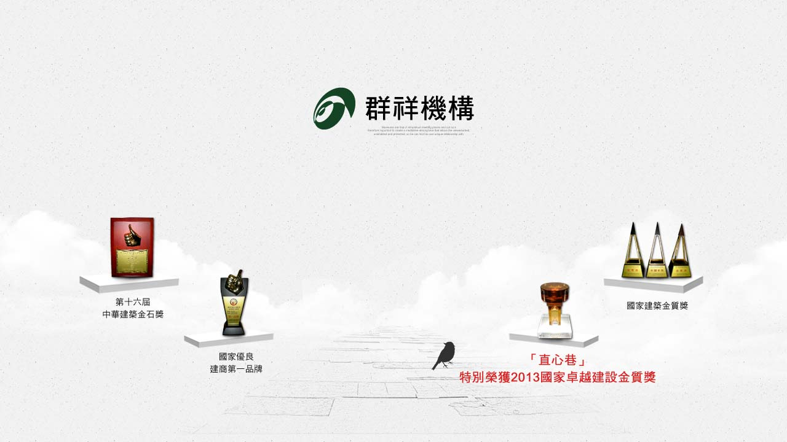
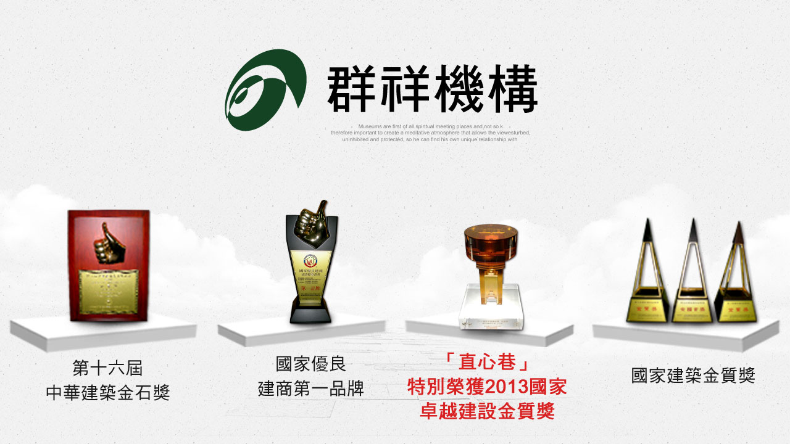
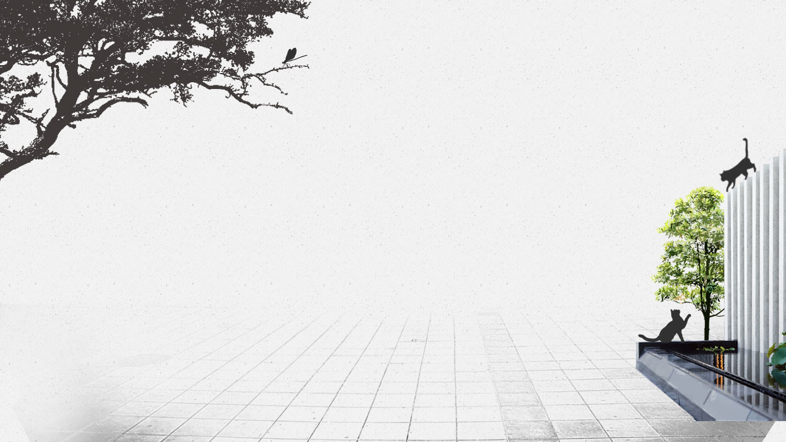
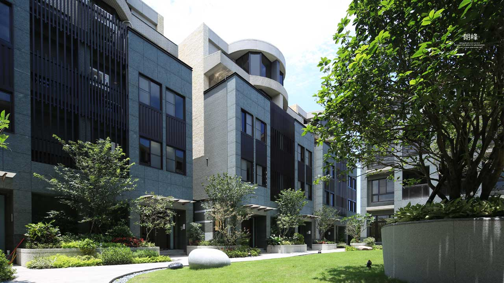
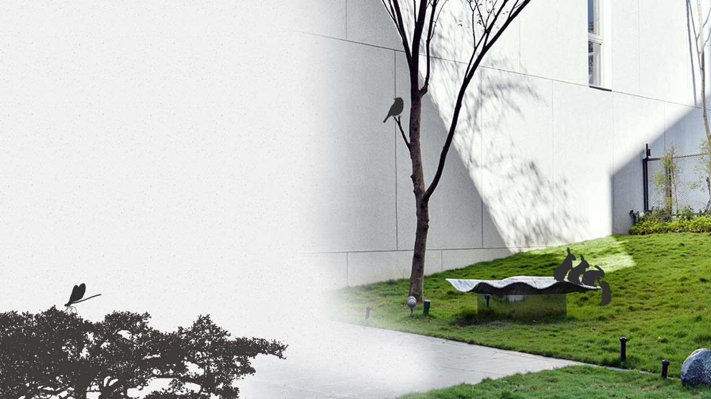
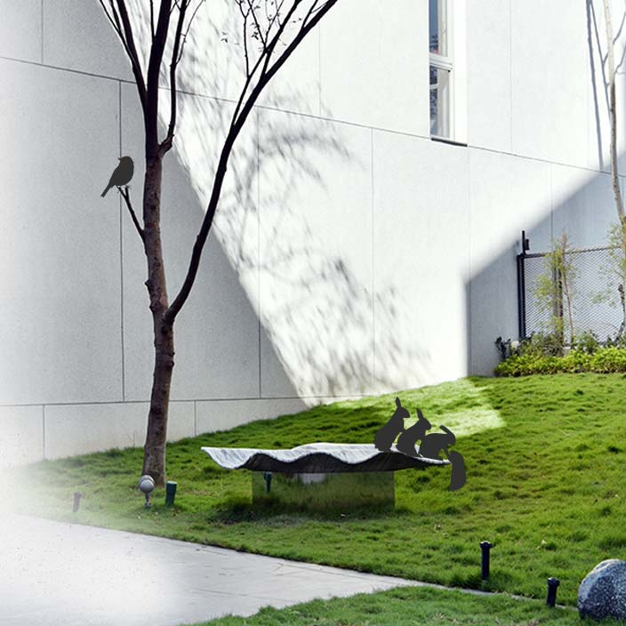
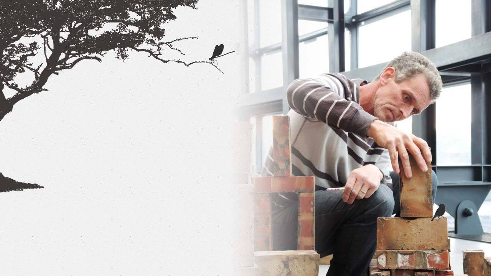
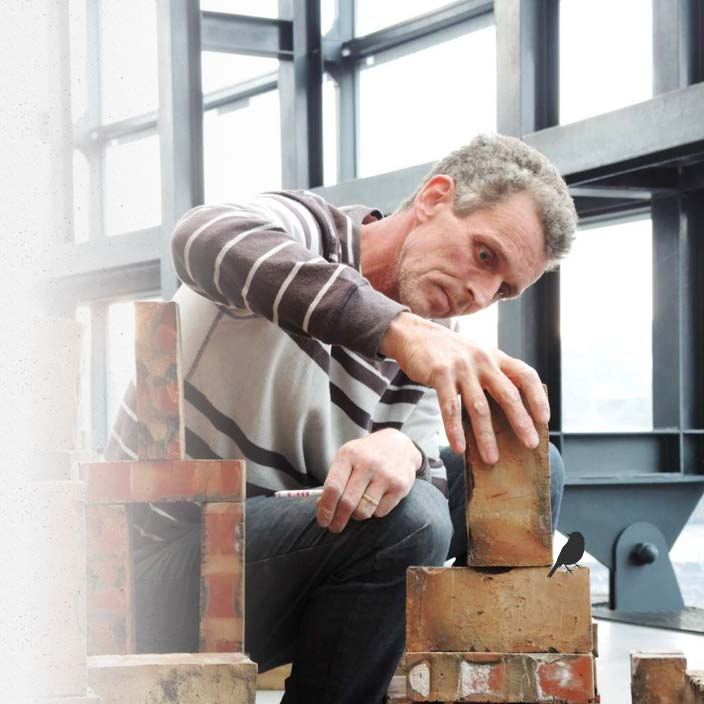
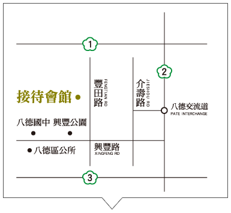

- 直心八德
- 墅的發生
- 神隱交通
- 生活片段
- |
- 植心建築
- 張景堯築跡
- 群祥藝術家
- 國際俬別墅
- |
- 質心空間
- 內在的風景
- 智慧型建築
- |
- 預約賞屋
- 直心八德
- 墅的發生
- 神隱交通
- 生活片段
- 植心建築
- 張景堯築跡
- 群祥藝術家
- 國際俬別墅
- 質心空間
- 內在的風景
- 智慧型建築
- 預約賞屋


蓋房子 是和土地相遇的故事
群祥開發以自然為師，友善環境，注入風光水綠，讓建築與原生地景融合， 留下人與自然互動的空間與元素，回歸生活的靜謐。 土地的記憶至真至善；惟有親近土地、擁有自己的土地，才能驗證人生的真價值。 人們久居喧囂都市，曾幾何時，童年一望無際的田野、森林、草原久不復見， 是出發尋覓一方淨土的時候了。


循著生活步伐 回歸的墅境
群祥開發以自然為師，友善環境， 在獨一無二的地理環境、得天獨厚的自然氛圍， 用了三年的時間，種下夢想種子， 從與土地相遇，到一起茁壯，讓建築與原生地景融合， 更留下人與自然互動的空間與元素。


承載靈魂的葉舟
暫停片刻，等待靈魂跟上來 卸下憂煩，躺上葉片般的船 藝術家以抽象的雕刻，化為中庭藝術裡的實質表現 讓功能性的「椅子」變化成一種「有機」的存在 更融入身處的自然環境與綠意之中
中庭藝術原創 英國皇家雕刻家 貝馬丁


中庭藝術原創 英國皇家雕刻家 貝馬丁
國際知名雕刻大師，英國皇家雕刻家協會會員 擅長以豐富多元手法，探索人的內心世界 作品陸續被收藏於海納川等知名豪宅公共空間中 英國東倫敦大學建築藝術系研究所碩士畢 1998-2004年 英國劍橋博立皇宮成立個人工作室並擔任雕刻公園籌畫負責人 2004年 於日本北海道ENIWA公園參與公共藝術創作 2009年 獲三義國際木雕競賽首獎 2010年 新竹玻璃工藝博物館「雕塑光影」個展 2015年 鶯歌陶瓷博物館「塑土/塑造地球」個展
